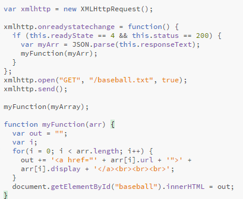

A common use of JSON is to read data from a web server, and display the data in a web page.
An EventHandler that is called whenever the readyState attribute changes. The callback is called from the user interface thread. The XMLHttpRequest.onreadystatechange property contains the event handler to be called when the readystatechange event is fired, that is every time the readyState property of the XMLHttpRequest changes.
XMLHttpRequest (XHR) is an API that can be used by JavaScript, JScript, VBScript, and other web browser scripting languages to transfer and manipulate XML data to and from a webserver using HTTP, establishing an independent connection channel between a webpage's Client-Side and Server-Side.
A common use of JSON is to exchange data to/from a web server. When receiving data from a web server, the data is always a string. Parse the data with JSON.parse(), and the data becomes a JavaScript object.
Below is the script and example I have for this one. I understand that I did not use an APi for this. I came across a lot of examples while I was reasearching this. I found where you could use an API and pull info from input a value. One of the examples that helped me to understand exactly what was going on was a whether one. I was asked to input my city and then the current whether was pulled from and API and returned to the page that I was currently on.
